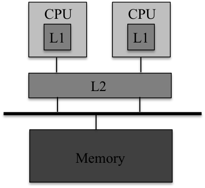
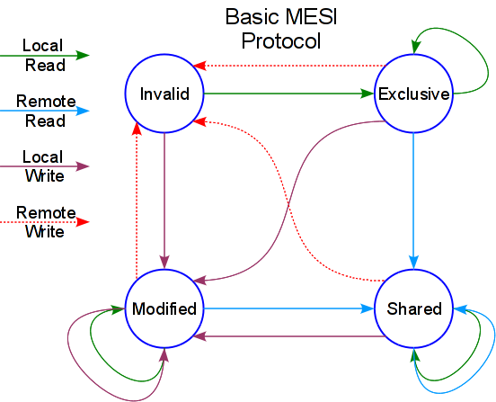

initial: all blocks are Invalid (I=0, cold start);
read miss: target block is Invalid, or no tag match; the processor retrieves the entire 64B line to put into cache, termed as cacheline fill;
read hit: matched tag is found, directly fetches the data from cache;
write miss: when the processor wants to write an operand to memory, it first checks if the block is already in cache. Unfortunately, the write refers to a memory location that not currently in cache, which causes the processor to perform a cacheline-fill (write allocation) and then proceeds to modify the value of the operand in cache without writing directly to memory;
write hit: the location is being held in cache, directly write (no eviction);
write back: when doing allacation for read/write misses, a line needed to be evicted for the newly fetched block; if the existing cache line is dirty, do a write-back.
As a summary:
V=1 means the line has valid data, and D=1 (dirty) means the bytes are newer than main memory.
when allocating line, set V=1, D=0 (clean) and fill in tag and data;
when writing a line in response to write hit, set D=1;
when evicting a line: if D=0 (memory data is NOT stale), just set V=0; if D=1 (memory data is stale), write-back the data and then set D=0 and V=0.
No-write: writes invalidate the cache and go directly to memory
Write-through: writes go to main memory and cache
Write-back: CPU writes only to cache; cache writes to main memory when the dirty block is later evicted.
if data is not in the cache
Write-allocate: allocate a cache line (put it in cache) for new data (and maybe write-through)
No-write-allocate: write it directly to memory without allocation
write-through vs. write-back
A cache with a write-through policy (and write-allocate) read an entire block (cacheline) from memory on a cache miss and writes only the updated item to memory for a store. Evictions do not need to write to memory.
A cache with a write-back policy (and write-allocate) reads an entire block (cacheline) from memory on a cache miss, may need to write dirty cacheline first. Any writes to memory need to be the entire cacheline since no way to distinguish which word was dirty with only a single dirty bit. Evictions of a dirty cacheline cause a write to memory.
write-through is lower but cleaner (memory always consistent), write-back is faster but complicated when multi cores sharing memory, requiring cache coherency protocol.
TLBs are small (maybe 64 entries), fully-associative caches for page table entries.
physical cache vs. virtual cache
If we translate before we go to the cache, we have a "physical cache" which works on physical addr. Critical path = TLB access time + cache access time
Alternatively, we could translate after the cache (only for cache misses), we have a "virtual cache". Virtual cache is dangerous. We must flush the cache on a context switch to avoid "aliasing".
virtually indexed physically tagged
Page offset bits are not translated and thus can be presented to the cache immediately. Accordingly, cache and TLB accesses can begin simultaneously, and tag comparion is made after both accesses are completed.
In a shared memory multiprocessor system, an operand can have multiple copies in main memory and in caches. Cache coherence is to ensure that the changes in the values of shared operands are propagated throughout the system in a timely fashion.
Coherence rules:
writes eventually become visible to all processors;
writes to the same location are serialized.

Fig.3 - Cache of CMP.
The most basic protocol is MSI. MSI → MESI:
MSI observation: doing read-modify-write sequences on private data is common, and hence the traffic can be reduced for writes of block on only one cache
MESI solution: adds E state (exclusive, clean), writes on such lines happen silently (don't tell other caches to invalidate the line), transition to M (exclusive, dirty)
MSI → MOSI:
MSI observation: on M→S transitions, must write back line
MOSI solution: adds O state (owner), indicating that the current core owns this block, and will service requests from other cores for the block.
MSI → MOESI:
achieves benefits of both MESI and MOSI
MESI addes an "Exclusive" state to reduce the traffic caused by writes of blocks that only in one cache (a silent write in MESI). Further, MOSI adds an "Owned" state to reduce the traffic caused by write-backs of blocks that are read by other caches.
MESI protocol

Fig.4 - State transitions in MESI protocol.
Every cache line is marked with one of the four following states (coded in two bits):
Modified: the line is present only in current local cache, and is dirty (memory copy is stale); A write back must be performed in future, before permitting any other read of the (no longer valid) memory.
The write-back changes the line to Shared state.
Exclusive: the line is present only in current local cache, but is clean (matches main memory); it may be changed to Shared at any time, in response to a read request. It may also be changed to Modified state when writing to it.
Shared: the line may be also stored in other caches and is clean (matches main memory). The line may be discarded (changed to Invalid state) at any time.
Invalid: the cache line is invalid (unused).
Transitions (assume local is on core0 and remote is on core1):
I →: E (core0_R) / M (core0_W);
E →: M (core0_W) / S (core1_R) / I (core1_W);
M →: S (core1_R) / I (core1_W);
S →: M (core0_W) / I (core1_W).
A cache may satisfy a read from any state except Invalid. An invalid line must be fetched (to the Shared or Exclusive states) to satisfy a read.
A write may only be performed if the cache line is in the Modified or Exclusive state. If it is in Shared state, all other cached copies must be invalidated first. This is typically done by a broadcast operation known as RfO.
A cache may discard a non-Modified line (i.e., Shared or Exclusive) at any time, changing to the Invalid state. A Modified line must be written back first.
A cache that holds a line in the Modified state must snoop (intercept) all attempted reads (from all of the other caches in the system) of the corresponding main mem location and insert the data it holds. This is typically done by forcing the read to back off (i.e., retry later), then writing the data to main memory and changing the cache line to Shared state.
A cache that holds a line in the Shared state must listen for invalidate or RfO broadcasts from other caches, and discard the line (by moving it into Invalid) on a match.
A cache that holds a line in Exclusive state must also snoop all read transactions from all other caches, and move the line into Shared state on a match.
Snooping cache
Snooping is widely used in bus-based multiprocessors. The cache controller constantly watches the bus.
Write invalidate: when a processor writes to local cache C, all copies of it in other processors are invalidated. These processors have to read or valid copy either from memory (M), or from the processor that modified the variable.
Write broadcast: instead of invalidating, the processor can broadcast the updated value to other processors sharing the copy. This acts as write through for shared data, and write back for private data.